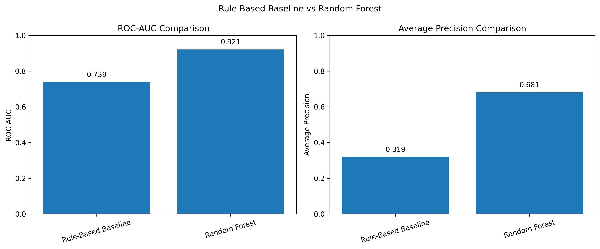
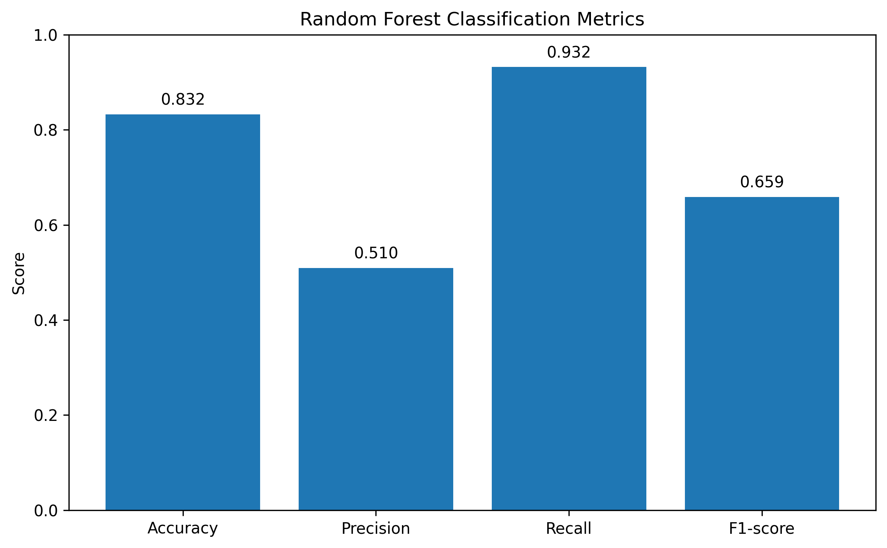
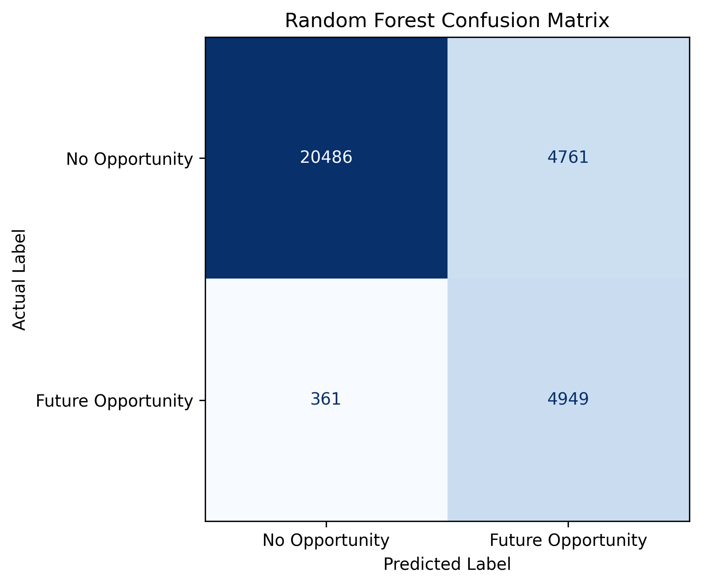
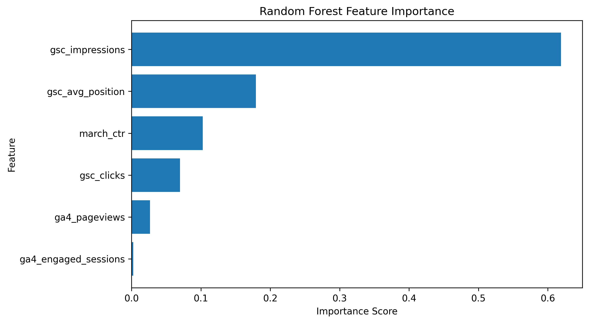
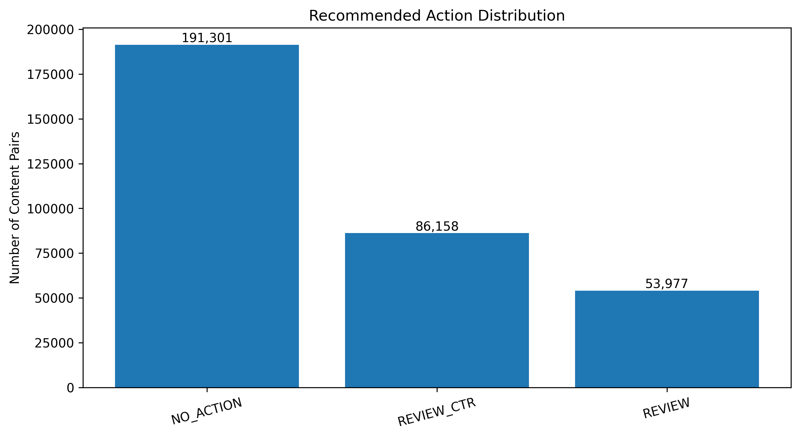
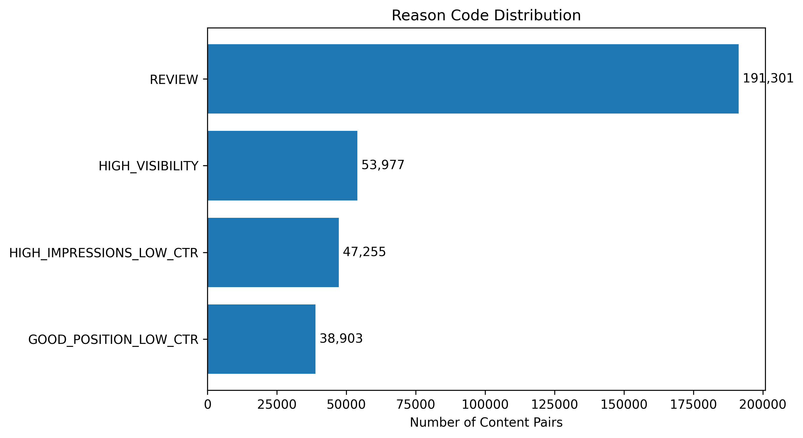

Abstract
This study investigates how observable search and content performance signals can be used to prioritize client-content pairs for human review. The study uses March 2026 search and engagement data from the FlyRank internship warehouse and defines a future opportunity proxy based on April 2026 impression and click-through rate thresholds. A Random Forest classifier using six performance features was evaluated through a client-grouped train-test split and compared with a rule-based baseline on the same test set. The Random Forest achieved a ROC-AUC of 0.921432 and an Average Precision of 0.680600, outperforming the baseline scores of 0.738707 and 0.318966, respectively. The resulting scoring approach is intended to support the prioritization of content and SEO reviews through ranked recommendations, rather than to establish causal improvements in search performance.
1. Problem framing
Organic search performance provides important signals for evaluating how content is exposed in search results and how users interact with it. Metrics such as impressions, clicks, click-through rate (CTR), and average search position represent different aspects of search visibility and engagement. Previous research has examined the relationship between search engine optimization and organic traffic [1]. Strzelecki and Miklosik [2] further investigated click-through rates in Google organic search results using clicks and impressions data, demonstrating that CTR varies across search result positions and device types. These metrics provide a basis for examining content performance and identifying pages that receive search exposure but generate relatively limited click engagement.
For content teams managing large portfolios of web pages, identifying which content should be reviewed first is a practical challenge. Reviewing every page individually can require substantial time and resources, while prioritization based on a single metric may overlook the relationships between search visibility, position, and user engagement. Therefore, a systematic approach that considers multiple performance signals is needed to support the identification and prioritization of content requiring further investigation.
Machine learning can support this process by identifying patterns across multiple performance indicators. Random Forest, introduced by Breiman [3], is an ensemble learning method that constructs multiple decision trees using bootstrap samples and randomized feature selection. The predictions from individual trees are aggregated to produce the final classification. This approach provides a suitable foundation for analyzing relationships among multiple numerical performance indicators in this study. However, model evaluation requires particular attention when the target classes are imbalanced. For imbalanced classification problems, precision-recall analysis provides an informative evaluation perspective because it focuses on the relationship between precision and recall for the positive class. Saito and Rehmsmeier [4] demonstrate that precision-recall plots can reveal performance differences that may be less apparent in ROC plots when evaluating classifiers on imbalanced datasets. Furthermore, model evaluation should consider dependencies among observations that belong to the same group. Roberts et al. [5] explain that random data splitting may produce overly optimistic performance estimates when observations share hierarchical or grouped structures. This consideration is relevant to datasets containing multiple content items associated with the same client, motivating the use of client-grouped data splitting in this study.
Although previous studies have examined organic search traffic and click behavior, this study focuses on a related operational problem: prioritizing client-content pairs for content and search engine optimization (SEO) review using historical performance signals. The study develops a content opportunity scoring approach that uses March 2026 search and engagement data as input features and an April 2026 performance condition as a proxy outcome. A pair is assigned to the future opportunity class when its April impressions exceed 100 and its CTR is below 0.001. This definition represents an observable performance condition used for classification, rather than verified evidence that refreshing the content would improve its performance.
The unit of analysis is a client-content pair, with each observation representing one content item associated with a client. The proposed approach produces a model score and ranking, accompanied by reason codes and recommended actions, to support content and SEO reviewers in prioritizing candidates for further investigation. The intended decision is to determine which client-content pairs should receive attention first, particularly those showing substantial search visibility but relatively low click engagement. A false positive may lead reviewers to spend time examining content that does not require immediate attention, whereas a false negative may cause a potentially relevant content opportunity to be overlooked. Accordingly, the proposed system is designed as a human-in-the-loop decision-support tool rather than an automated content optimization system.
The contributions of this study are threefold. First, it develops a transparent rule-based baseline and compares its performance with a Random Forest classifier using the same evaluation data. Second, it applies client-grouped train-test splitting to evaluate model performance on clients excluded from training. Third, it translates model scores into a ranked action queue with reason codes and recommended actions to support practical content review prioritization. The study does not aim to predict Google's ranking algorithm, establish causal relationships between content changes and search performance, or demonstrate the actual effectiveness of content refresh activities.
2. Data safety
The study uses the FlyRank/internship-warehouse dataset, specifically the fact_content_daily_performance table. The observation period covers March 1–31, 2026, while April 1–30, 2026 is used to construct the proxy outcome.
The March dataset contains 9,841,378 raw records, which were aggregated into 331,437 client-content pairs. The April dataset contains 10,424,730 raw records. After joining the aggregated March and April data using the client and content identifiers, 331,436 pairs remained for modeling.
Table 1. Dataset Overview
| Attribute | Value |
|---|---|
| Dataset | FlyRank/internship-warehouse |
| Source table | fact_content_daily_performance |
| Observation period | March 1–31, 2026 |
| Outcome period | April 1–30, 2026 |
| March raw records | 9,841,378 |
| April raw records | 10,424,730 |
| March aggregated pairs | 331,437 |
| Final modeling pairs | 331,436 |
| Unique client-content pairs | 331,436 |
| Input features | 6 |
Missing gsc_avg_position |
46.68% (154,699 values) |
March features were constructed by aggregating impressions, clicks, pageviews, and engaged sessions using summation, while average search position was calculated using the mean. March CTR was calculated as clicks divided by impressions, with zero assigned when impressions were zero. The April outcome was constructed from aggregated impressions and clicks.
The modeling dataset contains 331,436 unique client-content pairs and six input features:
gsc_impressionsgsc_clicksmarch_ctrgsc_avg_positionga4_pageviewsga4_engaged_sessions
The gsc_avg_position feature contains 154,699 missing values, representing 46.68% of the modeling dataset. Missing values were handled using median imputation within a machine learning pipeline fitted on the training data.
Client and content identifiers were retained only for joining and grouping observations. They were not used as model input features. April outcome fields, target labels, baseline scores, and reason codes were excluded from the model features to prevent target leakage. Only March performance features were used as model inputs.
The proxy target was derived from April performance and was not included among the March input features. The public report excludes client-identifying information, private queries, raw exports, and sensitive identifiers.
3. Baseline
A rule-based scoring approach was developed as the baseline for comparison with the Random Forest model. The baseline combines three percentile-based components:
- Visibility score, calculated from the percentile rank of impressions.
- CTR opportunity, calculated as one minus the percentile rank of CTR.
- Position opportunity, calculated as one minus the percentile rank of positive average search position. Invalid or non-positive position values receive zero.
The baseline score is calculated as the average of these three components. This approach provides a transparent comparison because it uses observable March performance signals and does not require model training.
The baseline was evaluated on the same client-grouped test set used for the Random Forest model. It achieved a ROC-AUC of 0.738707 and an Average Precision of 0.318966.
4. Model / analysis
This study uses a Random Forest classifier to estimate the likelihood of a predefined future opportunity condition. Random Forest was selected as an ensemble learning method capable of modeling relationships among multiple numerical performance features. The ensemble structure allows the classifier to combine predictions from multiple decision trees, while randomized feature selection introduces variation among the trees during model construction [3].
The model uses six March 2026 input features: gsc_impressions, gsc_clicks, march_ctr, gsc_avg_position, ga4_pageviews, and ga4_engaged_sessions.
The proxy target, future_opportunity, is defined as 1 when a client-content pair has more than 100 April impressions and an April CTR below 0.001; otherwise, it is defined as 0.
The model uses median imputation followed by a Random Forest classifier. The classifier configuration consists of 200 trees, a maximum depth of 12, a minimum of 20 samples per leaf, balanced class weights, and a random state of 42. The imputation step is fitted using training data only.
The final model is trained using all available labeled observations to generate the retrospective ranked action queue. This full-data model is used for recommendation generation, while the held-out test evaluation is reported separately.
5. Evaluation
The model was evaluated using a client-grouped train-test split to prevent observations from the same client from appearing in both training and testing sets. The split used 80% of the data for training and 20% for testing, with a random state of 42.
The training set contained 300,879 observations from 44 clients, while the test set contained 30,557 observations from 11 clients. No client overlap was found between the two sets.
The target distribution consisted of 280,002 negative observations (84.48%) and 51,434 positive observations (15.52%). This class imbalance was considered when interpreting the evaluation results. Considering the imbalanced target distribution, Average Precision (AP) was also used to evaluate the model's precision-recall performance. This metric complements ROC-AUC by providing an evaluation perspective focused on the positive class, following the considerations discussed by Saito and Rehmsmeier [4].
Table 2. Target Class Distribution
| Target Class | Count | Percentage |
|---|---|---|
| No Opportunity | 280,002 | 84.48% |
| Future Opportunity | 51,434 | 15.52% |
| Total | 331,436 | 100.00% |
The Random Forest achieved a ROC-AUC of 0.921432 and an Average Precision of 0.680600. The rule-based baseline achieved a ROC-AUC of 0.738707 and an Average Precision of 0.318966 on the same test set.
Table 3. Model Performance Comparison
| Experiment | ROC-AUC | Average Precision |
|---|---|---|
| Rule-Based Baseline | 0.738707 | 0.318966 |
| Random Forest | 0.921432 | 0.680600 |

Figure 1. Performance comparison between the rule-based baseline and Random Forest.
At a classification threshold of 0.5, the Random Forest achieved an accuracy of 0.832379, precision of 0.509681, recall of 0.932015, and F1-score of 0.658988.
Table 4. Random Forest Classification Metrics
| Metric | Value |
|---|---|
| Accuracy | 0.832379 |
| Precision | 0.509681 |
| Recall | 0.932015 |
| F1-score | 0.658988 |

Figure 2. Classification metrics of the Random Forest model at a threshold of 0.5.
The confusion matrix contained 20,486 true negatives, 4,761 false positives, 361 false negatives, and 4,949 true positives. The results indicate that the model identified most positive proxy cases, while also producing false-positive predictions that require human verification.
Table 5. Confusion Matrix
| Actual / Predicted | Negative | Positive |
|---|---|---|
| Negative | 20,486 (TN) | 4,761 (FP) |
| Positive | 361 (FN) | 4,949 (TP) |

Figure 3. Confusion matrix of the Random Forest classifier at a threshold of 0.5.
6. Interpretation
The feature importance results indicate that gsc_impressions contributed the largest share of the Random Forest model's feature importance at 61.89%. This was followed by gsc_avg_position at 17.92%, march_ctr at 10.27%, gsc_clicks at 6.99%, ga4_pageviews at 2.68%, and ga4_engaged_sessions at 0.25%.
Table 6. Random Forest Feature Importance
| Feature | Importance | Importance (%) |
|---|---|---|
gsc_impressions |
0.618917 | 61.89 |
gsc_avg_position |
0.179190 | 17.92 |
march_ctr |
0.102720 | 10.27 |
gsc_clicks |
0.069861 | 6.99 |
ga4_pageviews |
0.026835 | 2.68 |
ga4_engaged_sessions |
0.002477 | 0.25 |

Figure 4. Relative feature importance in the Random Forest model.
These results show that search visibility and search position were the most influential features in the fitted model. However, feature importance represents relative contribution within the model and does not establish causal relationships or the direction of an individual feature's effect.
The model's Average Precision was higher than that of the rule-based baseline, indicating improved positive-class ranking performance under the evaluated test conditions. Nevertheless, the positive class represented only 15.52% of the dataset, and the classification results included 4,761 false positives and 361 false negatives.
Overall, the findings suggest that combining search and content performance signals can support the prioritization of content candidates associated with the defined future opportunity condition. The findings should be interpreted within the specific March-to-April observation window and proxy target definition.
7. Recommendation
The final Random Forest model was trained on all 331,436 available client-content pairs to generate a retrospective ranked action queue. Each pair received a model score and was sorted in descending order of that score, with March impressions used as a secondary sorting criterion.
The queue contains three recommended action categories: NO_ACTION, REVIEW_CTR, and REVIEW. The NO_ACTION category contains 191,301 pairs, REVIEW_CTR contains 86,158 pairs, and REVIEW contains 53,977 pairs.
Table 7. Recommended Action Distribution
| Recommended Action | Number of Pairs | Percentage |
|---|---|---|
NO_ACTION |
191,301 | 57.72% |
REVIEW_CTR |
86,158 | 26.00% |
REVIEW |
53,977 | 16.29% |
| Total | 331,436 | 100.00% |

Figure 5. Distribution of recommended actions in the ranked action queue.
Reason codes provide additional context for human reviewers:
HIGH_IMPRESSIONS_LOW_CTR: content with more than 100 impressions and CTR below 0.001, recommended for CTR-related review.GOOD_POSITION_LOW_CTR: content with a positive average position of 10 or better and CTR below 0.001, recommended for title and meta description review.HIGH_VISIBILITY: content with more than 100 impressions, recommended for general content performance review.REVIEW: no specific rule-based opportunity signal was identified.
Table 8. Reason Code Distribution
| Reason Code | Number of Pairs |
|---|---|
REVIEW |
191,301 |
HIGH_VISIBILITY |
53,977 |
HIGH_IMPRESSIONS_LOW_CTR |
47,255 |
GOOD_POSITION_LOW_CTR |
38,903 |
| Total | 331,436 |

Figure 6. Distribution of reason codes in the ranked action queue.
A FlyRank editor can use the queue to select candidates for further investigation. For example, candidates with high impressions and low CTR may be examined for search snippet relevance, title and meta description alignment, and consistency with search intent.
The ranked queue is a retrospective decision-support artifact generated using the March-April labeled dataset. Its model scores represent estimated likelihoods of the defined proxy outcome, not probabilities that content refresh actions will improve search performance. Human review is required before any content changes are considered.
8. Reproducibility
The project is organized into separate notebooks for each internship assignment and the final capstone implementation. The weekly notebooks (W1–W7) and the capstone notebook are stored in work/notebooks/, while the research report and visualization assets are maintained in work/.
The project dependencies are documented in the root-level requirements.txt, including pandas, NumPy, scikit-learn, Matplotlib, ReportLab, DuckDB, and Hugging Face Hub. The listed versions specify minimum requirements rather than exact pinned versions.
The aggregate experiment results are stored in work/outputs/. These include baseline_metrics.json for the rule-based baseline, model_metrics.json for the final Random Forest evaluation, validation_metrics.json for the validation comparison, and action_queue_summary.json for the ranked action queue summary. These files provide supporting evidence for the reported evaluation metrics and recommendation distributions.
The modeling workflow uses a client-grouped train-test split with GroupShuffleSplit, configured with test_size=0.20 and random_state=42. The Random Forest model uses 200 estimators, a maximum depth of 12, and a minimum of 20 samples per leaf. Median imputation is integrated into a scikit-learn Pipeline to ensure that imputation parameters are learned from the training data.
Dataset access requires the appropriate Hugging Face permissions and authentication. The access token is managed through Google Colab Secrets rather than being stored directly in the notebook.
The evaluation represents one client-grouped holdout split using March features and April outcomes. It is not a sealed evaluation or a time-series validation across multiple periods. Reproducing the results requires access to the dataset, the required credentials, and a compatible Python environment.
9. Acknowledgments & data credit
This work was developed as part of the FlyRank Machine Learning Internship Capstone. The analysis uses the Built on the FlyRank ML Internship dataset as its data source.
References
[1] M. R. Baye, B. de los Santos, and M. R. Wildenbeest, “Search Engine Optimization: What Drives Organic Traffic to Retail Sites?,” Journal of Economics & Management Strategy, vol. 25, no. 1, pp. 6–31, 2016. doi: 10.1111/jems.12141.
[2] A. Strzelecki and A. Miklosik, “Device-dependent click-through rate estimation in Google organic search results based on clicks and impressions data,” Aslib Journal of Information Management, vol. 77, no. 3, pp. 513–529, 2025. doi: 10.1108/AJIM-04-2023-0107.
[3] L. Breiman, “Random Forests,” Machine Learning, vol. 45, no. 1, pp. 5–32, 2001. doi: 10.1023/A:1010933404324.
[4] T. Saito and M. Rehmsmeier, “The Precision-Recall Plot Is More Informative than the ROC Plot When Evaluating Binary Classifiers on Imbalanced Datasets,” PLOS ONE, vol. 10, no. 3, Art. no. e0118432, 2015. doi: 10.1371/journal.pone.0118432.
[5] D. R. Roberts et al., “Cross-validation strategies for data with temporal, spatial, hierarchical, or phylogenetic structure,” Ecography, vol. 40, no. 8, pp. 913–929, 2017. doi: 10.1111/ecog.02881.